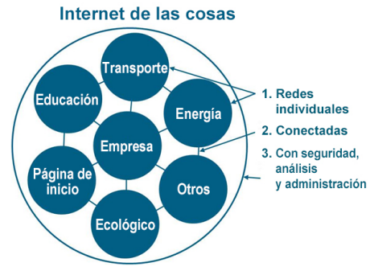

Funcionamiento
El funcionamiento de los sistemas de IoT tradicionales consiste en enviar, recibir y analizar los datos de forma permanente en un ciclo de retroalimentación. Según el tipo de tecnología de IoT, las personas o los sistemas de inteligencia artificial y aprendizaje automático (IA/ML) pueden analizar estos datos casi de inmediato o durante cierto tiempo.
Por ejemplo, para saber cuándo es ideal controlar el termostato antes de volver a casa, el sistema de IoT puede conectarse a la API de Google Maps y, de este modo, obtener información actual sobre el tráfico en el área. Además, puede utilizar los datos a largo plazo del automóvil para conocer sus hábitos de conducción. Por otra parte, las empresas de servicios públicos tienen la posibilidad de analizar los datos de IoT de los clientes con termostatos inteligentes para optimizar el sistema en general.

Componentes
Dispositivos inteligentes
Se trata de dispositivos, como un televisor, una cámara de seguridad o un equipo de ejercicio, a los que se les dotó de capacidades de computación. Recopila datos de su entorno, de las entradas de los usuarios o de los patrones de uso y comunica los datos a través de Internet hacia y desde su aplicación de IoT.
Aplicación de IoT
Una aplicación de IoT es un conjunto de servicios y software que integra los datos recibidos de varios dispositivos de IoT. Utiliza tecnología de machine learning o inteligencia artificial (IA) para analizar estos datos y tomar decisiones informadas. Estas decisiones se comunican al dispositivo de IoT y este responde de forma inteligente a las entradas.
Una interfaz de usuario gráfica
El dispositivo de IoT o la flota de dispositivos pueden administrarse a través de una interfaz de usuario gráfica. sAlgunos ejemplos comunes son una aplicación móvil o un sitio web que pueden utilizarse para registrar y controlar dispositivos inteligentes.
Arquitectura de sistemas de IoT
Se puede dividir en cuatro capas:
- Capa de detección: Sensores, los objetos físicos y la obtención de datos.
- Capa de Intercambio de Datos: Transmisión transparente de datos a través de redes de comunicación.
- Capa de integtración de la información: El procesamiento de la información incierta adquirida de las redes, filtrado de datos no deseados e integración de información principal en conocimiento útil para los servicios y los usuarios finales.
- Capa de servicio de aplicación: Da servicios de contenido a los usuarios.